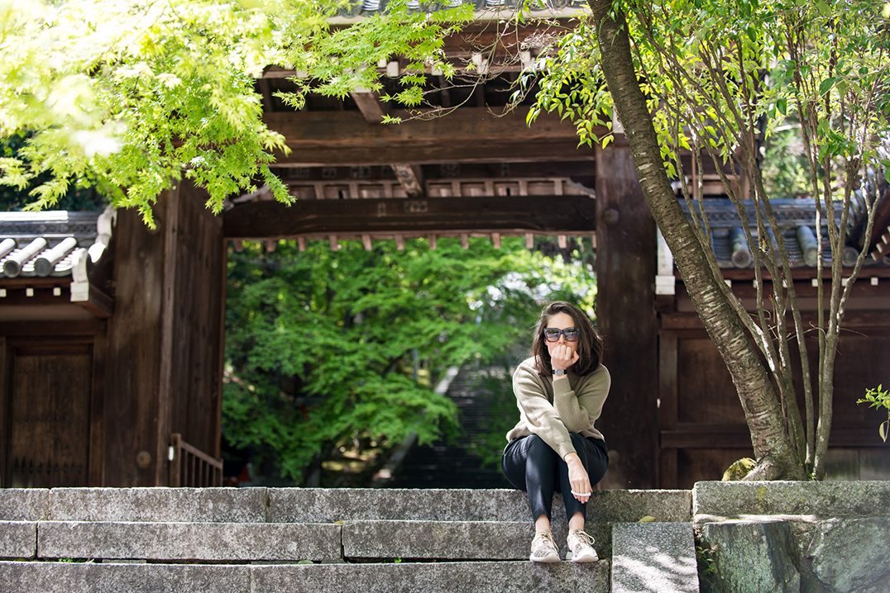

Features - The Boweress
Old school
26 June, 2016
The best thing about Kyoto was the public bath in the hotel…! No it wasn’t all that bad
Kyoto didn’t click for me, as it seemed to be a massive tourist trap and maybe I wasn’t on the ball or in tune with what was happening. The train station is massive and it seems to be an intersection of travel for many. Kyoto was a stopover on route to Naoshima Island and was in hindsight maybe treated that way.
Firstly, Kyoto is better seen via bus, which seems strange for a country built on high-speed rail. The bus has a system where you pay (the correct amount) at your final destination, so heads up, don’t disturb the driver upon boarding.
Gion is Kyoto’s most famous Geisha district and unfortunately is overrun by tourists staking out geishas as they shuffle between tearooms entertaining. It’s a town of many tiny streets all providing different aspects of Kyoto culture, Kaiseki cuisine being the main draw card. There seems to be a vibe of ‘we hate tourist’ which you can understand due to tourists acting like ruthless paparazzi just to get a shot of a geisha. We were fortunate enough to grasp a sighting of one yet she quickly rushed inside. It seems horrible to think that such a beautiful and traditional past time is now overridden with fear of being accosted for a photo.
After being ripped off for our bikes (worth looking around rather than grabbing the first ones), we set off to the bamboo forest. This place was pretty amazing where you really felt immersed but the main attraction of Kyoto for me was the riding around and exploring on your own. When is getting lost in a new city not fun. This is a great way to really interact with the locals (help, how do we get here?) and find spots that aren’t on the tourist guide. For example upon getting to the top of an epic mountain to a beautiful glass yep glass teahouse we were sad to find it closed but we saw an amazing abandoned theme park on the way up that we would have never caught a glimpse of if not travelled there.
Kyoto is a lovely break from the bright lights of Tokyo.
